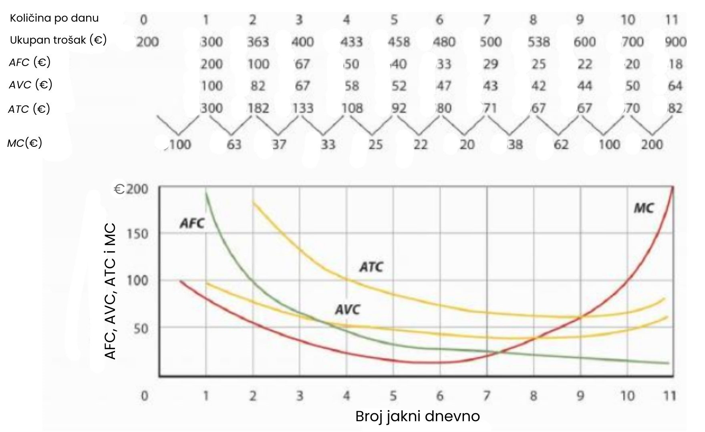

Kratkoročno razdoblje
Naša analiza proizvodnje i troškova započinje razdobljem koje ekonomisti nazivaju kratkim rokom. Kratki rok u ovom mikroekonomskom kontekstu je plansko razdoblje tijekom kojeg menadžeri poduzeća moraju smatrati jedan ili više svojih proizvodnih čimbenika nepromjenjivima u količini. Na primjer, restoran može smatrati svoju zgradu fiksnim čimbenikom tijekom razdoblja od najmanje jedne godine. Potrebno je barem toliko vremena da se pronađe nova zgrada ili da se proširi ili smanji veličina postojeće. Odluke koje se odnose na poslovanje restorana tijekom sljedeće godine moraju pretpostaviti da će zgrada ostati nepromijenjena. Ostali proizvodni čimbenici mogli bi se mijenjati tijekom godine, ali veličinu zgrade treba smatrati konstantnom.
Kada se količina nekog proizvodnog čimbenika ne može promijeniti tijekom određenog razdoblja, govori se o fiksnom proizvodnom čimbeniku. Za restoran, zgrada je fiksni proizvodni čimbenik barem na godinu dana. Proizvodni čimbenik čija se količina može mijenjati tijekom određenog razdoblja naziva se varijabilnim proizvodnim čimbenikom; primjeri su radna snaga i hrana.
Dok menadžeri restorana donose odluke vezane uz poslovanje tijekom sljedeće godine, oni istovremeno planiraju i za duža razdoblja. Tijekom tih razdoblja, menadžeri mogu razmatrati alternative poput preuređenja zgrade, izgradnje novog objekta ili prodaje zgrade i izlaska iz ugostiteljskog poslovanja. Plansko razdoblje u kojem poduzeće može razmatrati sve proizvodne čimbenike kao promjenjive naziva se dugim rokom.
U svakom trenutku poduzeće donosi i kratkoročne i dugoročne odluke. Menadžeri mogu planirati što učiniti u narednim tjednima, ali i tijekom sljedećih nekoliko godina. Njihove odluke za sljedećih nekoliko tjedana vjerojatno su kratkoročne odluke. Odluke koje će utjecati na poslovanje tijekom sljedećih nekoliko godina mogu biti dugoročne odluke, u kojima menadžeri mogu razmotriti promjene u svakom aspektu poslovanja. Naša analiza u ovom dijelu usmjerena je na kratki rok. Dugoročne odluke razmatramo kasnije u ovom poglavlju.
Kratkoročna proizvodna funkcija
Poduzeće koristi proizvodne čimbenike za proizvodnju proizvoda. Odnos između proizvodnih čimbenika i outputa poduzeća naziva se proizvodna funkcija. Naš prvi zadatak je istražiti prirodu proizvodne funkcije.
Razmotrimo hipotetsko poduzeće, Acme Clothing, trgovinu koja proizvodi jakne. Pretpostavimo da Acme ima zakup na svoju zgradu i opremu. Tijekom trajanja zakupa, kapital Acmea predstavlja njegov fiksni proizvodni čimbenik. Varijabilni proizvodni čimbenici Acmea uključuju stvari poput rada, tkanine i električne energije. U analizi koja slijedi pojednostavit ćemo stvari tako da ćemo pretpostaviti da je rad jedini varijabilni proizvodni čimbenik Acmea.
Ukupni, granični i prosječni proizvod
Slika prikazuje broj jakni koje Acme može proizvesti uz različite količine rada (u ovom slučaju, krojača) i zadanu razinu kapitala. Krivulja ukupnog proizvoda prikazuje količine outputa koje se mogu dobiti iz različitih količina varijabilnog proizvodnog čimbenika, pod pretpostavkom da su ostali čimbenici proizvodnje fiksni.
Tablica prikazuje razine proizvodnje po danu za tvrtku Acme Clothing Company pri različitim količinama rada po danu, uz pretpostavku da je kapital poduzeća fiksan. Te su vrijednosti zatim prikazane grafički kao krivulja ukupnog proizvoda.
Obratite pozornost na nagib krivulje ukupnog proizvoda na slici. Između 0 i 3 jedinice rada po danu, krivulja postaje strmija. Između 3 i 7 radnika, krivulja i dalje raste, ali njezin nagib opada. Nakon sedmog krojača, proizvodnja počinje opadati i krivulja se naginje prema dolje.
Mjera nagiba bilo koje krivulje jest okomita promjena između dvije točke podijeljena s vodoravnom promjenom između istih točaka. Nagib krivulje ukupnog proizvoda za rad iznosi promjena u outputu (ΔQ) podijeljena s promjenom u jedinicama rada (ΔL):
Nagib krivulje ukupnog proizvoda = ΔQ / ΔL
Nagib krivulje ukupnog proizvoda za bilo koji varijabilni faktor mjeri promjenu u outputu povezanu s promjenom količine tog varijabilnog faktora, uz pretpostavku da su svi ostali faktori konstantni. Količina za koju output raste s dodatnom jedinicom varijabilnog faktora naziva se granični proizvod tog faktora. Matematički, granični proizvod je omjer promjene u outputu i promjene u količini varijabilnog faktora. Granični proizvod rada (MPL), na primjer, iznosi koliko output raste s dodatnom jedinicom rada. Stoga je to omjer promjene u outputu prema promjeni u količini rada (ΔQ / ΔL), uz nepromijenjene sve ostale uvjete. Mjeri se kao nagib krivulje ukupnog proizvoda za rad.
Osim toga, možemo definirati prosječni proizvod varijabilnog faktora. To je proizvodnja po jedinici varijabilnog faktora. Prosječni proizvod rada (APL), na primjer, predstavlja omjer ukupne proizvodnje i broja jedinica rada (Q/L).
Pojam prosječnog proizvoda često se koristi za usporedbu razina produktivnosti kroz vrijeme ili za usporedbu razina produktivnosti među državama. Kada u novinama pročitate da produktivnost raste ili opada, ili da je produktivnost u Sjedinjenim Američkim Državama devet puta veća nego u Kini, vjerojatno se radi o nekoj mjeri prosječnog proizvoda rada.
Krivulja ukupnog proizvoda na dijagramu (a) slike u nastavku ponovljena je s prethodne slike. Dijagram (b) prikazuje krivulje graničnog proizvoda i prosječnog proizvoda. Primijetite da je granični proizvod nagib krivulje ukupnog proizvoda, i da granični proizvod raste kada nagib krivulje ukupnog proizvoda raste, opada kada nagib opada, doseže nulu kada krivulja ukupnog proizvoda doseže svoju maksimalnu vrijednost i postaje negativan kada krivulja pada prema dolje. Kao i u drugim dijelovima ovog teksta, granične vrijednosti se prikazuju na sredini svakog intervala. Na primjer, granični proizvod pete jedinice rada prikazan je između četvrte i pete jedinice rada. Također primijetite da krivulja graničnog proizvoda presijeca krivulju prosječnog proizvoda u točki maksimuma prosječnog proizvoda. Kada je granični proizvod iznad prosječnog, prosječni proizvod raste. Kada je granični proizvod ispod prosječnog, prosječni proizvod opada.
Prva dva reda u tablici prikazuju vrijednosti za količine rada i ukupni proizvod sa slike. Granični proizvod, prikazan u trećem redu, predstavlja promjenu u proizvodnji koja nastaje kao rezultat povećanja rada za jednu jedinicu. Prosječni proizvod, prikazan u četvrtom redu, je proizvodnja po jedinici rada. Dijagram (a) prikazuje krivulju ukupnog proizvoda. Nagib te krivulje predstavlja granični proizvod, koji je prikazan na diajgramu (b). Vrijednosti za granični proizvod prikazane su na sredini intervala. Prosječni proizvod prvo raste pa opada. Kada je granični proizvod iznad prosječnog, prosječni proizvod raste. Kada je granični proizvod ispod prosječnog, prosječni proizvod opada. Krivulja graničnog proizvoda presijeca krivulju prosječnog proizvoda u njezinoj najvišoj točki.
Kao student, možeš koristiti vlastito iskustvo kako bi razumio odnos između graničnih i prosječnih vrijednosti. Tvoj prosjek ocjena predstavlja prosječnu ocjenu koju si postigao u svim dosadašnjim kolegijima. Kada upišeš dodatni kolegij, tvoja ocjena na tom kolegiju predstavlja graničnu ocjenu. Što se događa s tvojim prosjekom kada dobiješ ocjenu koja je viša od prethodnog prosjeka? Prosjek raste. A što se događa kada dobiješ nižu ocjenu? Prosjek opada. Ako ti je prosjek 3.0 i dobiješ još jednu ocjenu dobar(3), tada je tvoja granična ocjena jednaka prosjeku i prosjek ostaje nepromijenjen.
Odnos između prosječnog proizvoda i graničnog proizvoda je sličan. Međutim, za razliku od tvojih ocjena koje mogu nasumično varirati, granični proizvod uvijek prvo raste pa opada, iz razloga koje ćemo uskoro objasniti. Čim granični proizvod padne ispod prosječnog proizvoda, krivulja prosječnog proizvoda se naginje prema dolje. Dok je granični proizvod iznad prosječnog, bez obzira raste li ili opada, krivulja prosječnog proizvoda se naginje prema gore.
Kao što smo naučili, ponašanje usmjereno na maksimizaciju zahtijeva donošenje odluka na marginama. Zbog toga ćemo sada usmjeriti pažnju na bolje razumijevanje graničnog proizvoda.
Povećanje, opadanje i negativni granični prinosi
Dodavanje prvog radnika povećava Acmeovu proizvodnju s 0 na 1 jaknu dnevno. Drugi krojač dodaje 2 jakne ukupnoj proizvodnji; treći dodaje 4. Granični proizvod raste jer svaki dodatni radnik omogućuje veću specijalizaciju. Jedan radnik može rezati tkaninu, drugi šivati šavove, a treći izrađivati rupice za gumbe. Njihovi rastući granični proizvodi odražavaju se kroz rastući nagib krivulje ukupnog proizvoda tijekom prva 3 radnika te kroz uzlazni nagib krivulje graničnog proizvoda u istom rasponu. Raspon u kojem granični proizvodi rastu naziva se rasponom rastućih graničnih prinosa. Rastući granični prinosi postoje u kontekstu krivulje ukupnog proizvoda za rad, dakle pod pretpostavkom da su količine ostalih proizvodnih faktora fiksne. Rastući granični prinosi mogu se pojaviti kod bilo kojeg varijabilnog faktora.
Četvrti radnik pridonosi manje ukupnoj proizvodnji nego treći; njegov granični proizvod iznosi 2 jakne. Podaci sa prethodne slike pokazuju da granični proizvod nastavlja opadati nakon četvrtog radnika kako se zapošljava sve više radnika. Dodatni radnici omogućuju još veću specijalizaciju, ali budući da rade uz fiksnu količinu kapitala, svaki novi radnik doprinosi sve manje ukupnoj proizvodnji. Peti krojač dodaje samo jednu jaknu ukupnoj proizvodnji. Kada svaki dodatni radnik doprinosi manje ukupnoj proizvodnji, poduzeće doživljava opadajuće granične prinose. U rasponu opadajućih graničnih prinosa, granični proizvod varijabilnog faktora je pozitivan, ali opada. I ovdje pretpostavljamo da su svi drugi faktori proizvodnje fiksni. Opadajući granični prinosi mogu se javiti kod bilo kojeg varijabilnog faktora. Dijagram (b) prikazuje da Acme doživljava opadajuće granične prinose između trećeg i sedmog radnika, odnosno između 7 i 11 jakni dnevno.
Nakon sedmog radnika, Acmeovo fiksno postrojenje postaje toliko pretrpano da dodavanje još jednog radnika zapravo smanjuje proizvodnju. Kada dodatne jedinice varijabilnog faktora smanjuju ukupnu proizvodnju, uz nepromijenjene količine svih ostalih faktora, poduzeće doživljava negativne granične prinose. Tada krivulja ukupnog proizvoda opada, a krivulja graničnog proizvoda pada ispod nule. Skjedeći graf prikazuje raspone rastućih, opadajućih i negativnih graničnih prinosa. Jasno je da nijedno poduzeće neće namjerno dodati toliko varijabilnog faktora proizvodnje da uđe u raspon negativnih graničnih prinosa.
Ovaj graf prikazuje Acmeovu krivulju ukupnog proizvoda sa prve slike s označenim rasponima rastućih graničnih prinosa, opadajućih graničnih prinosa i negativnih graničnih prinosa. Acme doživljava rastuće granične prinose između 0 i 3 jedinice rada dnevno, opadajuće granične prinose između 3 i 7 jedinica rada dnevno, te negativne granične prinose nakon sedme jedinice rada.
Ideja da granični proizvod varijabilnog faktora s vremenom opada unutar nekog raspona dovoljno je važna i dovoljno opća da su je ekonomisti formulirali kao zakon. Zakon opadajućih graničnih prinosa kaže da će granični proizvod bilo kojeg varijabilnog faktora proizvodnje s vremenom početi opadati, pod pretpostavkom da količine svih drugih faktora proizvodnje ostaju nepromijenjene.
❗Lako je zamijeniti pojam opadajućih graničnih prinosa s idejom negativnih graničnih prinosa. Reći da poduzeće doživljava opadajuće granične prinose ne znači da mu proizvodnja opada. Opadajući granični prinosi znače da granični proizvod varijabilnog faktora opada. Proizvodnja i dalje raste kako se povećava količina varijabilnog faktora, ali raste sve manjim i manjim iznosima. Kao što smo vidjeli, raspon opadajućih graničnih prinosa bio je između trećeg i sedmog radnika; u tom se rasponu proizvodnja povećala sa 7 na 11 jakni. Negativni granični prinosi započinju nakon sedmog radnika.
Kako bismo razumjeli logiku zakona opadajućih graničnih prinosa, zamislimo situaciju u kojoj taj zakon ne vrijedi. Recimo da imate mali komad zemlje za povrtnjak, veličine 10 puta 10 stopa. Sam taj komad zemlje je fiksni faktor u proizvodnji povrća. Pretpostavimo da možete držati sve ostale faktore konstantnima—vodu, sunčevu svjetlost, temperaturu, gnojivo i sjeme—i mijenjati samo količinu rada uloženog u vrt. Koliko bi hrane vrt mogao proizvesti? Pretpostavimo da granični proizvod rada stalno raste ili ostaje konstantan. Tada biste mogli proizvesti neograničenu količinu hrane na svom malom komadu zemlje—dovoljno da nahranite cijeli svijet! Mogli biste dodati neograničen broj radnika na taj prostor i svejedno povećavati proizvodnju konstantnim ili rastućim tempom. Ako ne biste dobili dovoljno hrane s, recimo, 500 radnika, mogli biste koristiti 5 milijuna; petmilijunti radnik bi dodao barem isto toliko proizvodnji koliko i prvi. Ako se opadajući granični prinosi rada ne bi pojavljivali, tada bi krivulja ukupnog proizvoda imala konstantno ili rastuće uzlazno nagnuće.
Oblik krivulje ukupnog proizvoda i oblik pripadajuće krivulje graničnog proizvoda prikazani na drugom grafu tipični su za svako poduzeće u kratkom roku. S obzirom na fiksne faktore proizvodnje, povećanje korištenja varijabilnog faktora u početku će generirati rastuće granične prinose; krivulja ukupnog proizvoda za varijabilni faktor postaje strmija, a granični proizvod raste. Mogućnost povećane specijalizacije u korištenju varijabilnog faktora objašnjava taj raspon rastućih graničnih prinosa. No, s vremenom će se pojaviti opadajući prinosi. Krivulja ukupnog proizvoda postat će ravnija, a krivulja graničnog proizvoda će padati.
Troškovi proizvodnje jednog poduzeća ovise o količinama i cijenama faktora proizvodnje. Budući da očekujemo da će se proizvodnja poduzeća mijenjati na specifičan način s obzirom na korištenje rada, također možemo očekivati da će se i troškovi mijenjati na specifičan način u odnosu na razinu proizvodnje. Upotrijebit ćemo informacije o Acmeovim proizvodnim krivuljama kako bismo otkrili kako se troškovi poduzeća mijenjaju s njegovom razinom proizvodnje.
Razlikujemo troškove povezane s korištenjem varijabilnih faktora proizvodnje, koji se nazivaju varijabilni troškovi, i troškove povezane s korištenjem fiksnih faktora proizvodnje, koji se nazivaju fiksni troškovi. Za većinu poduzeća, varijabilni troškovi uključuju troškove za sirovine, plaće radnika u proizvodnji i režije. Plaće višeg menadžmenta mogu biti fiksni troškovi; svi troškovi određeni ugovorom kroz određeno razdoblje, poput Acmeova jednogodišnjeg najma zgrade i opreme, vjerojatno su fiksni troškovi. Često korišteni naziv za fiksne troškove je režijski troškovi. Važno je primijetiti da fiksni troškovi postoje samo u kratkom roku. U dugom roku količine svih faktora proizvodnje su promjenjive, tako da su svi troškovi u dugom roku varijabilni.
Ukupni varijabilni trošak (TVC) je trošak koji se mijenja s razinom proizvodnje. Ukupni fiksni trošak (TFC) je trošak koji se ne mijenja s proizvodnjom. Ukupni trošak (TC) je zbroj ukupnog varijabilnog troška i ukupnog fiksnog troška:
TVC + TFC = TC
Od ukupne proizvodnje do ukupnih troškova
Sljedeće ilustriramo odnos između Acmeove krivulje ukupnog proizvoda i njegovih ukupnih troškova. Acme može mijenjati količinu rada koju koristi svaki dan, pa je trošak tog rada varijabilni trošak. Pretpostavljamo da je kapital fiksni faktor proizvodnje u kratkom roku, pa je njegov trošak fiksni trošak.
Pretpostavimo da Acme plaća plaću od 100 eura po radniku dnevno. Ako je rad jedini varijabilni faktor, tada ukupni varijabilni troškovi Acmea po danu iznose 100 eura puta broj zaposlenih radnika. Možemo koristiti podatke iz krivulje ukupnog proizvoda, zajedno s visinom plaće, kako bismo izračunali Acmeove ukupne varijabilne troškove.
Znamo iz da Acmeu treba 1 radnik koji radi jedan dan za proizvodnju jedne jakne. Ukupni varijabilni trošak jedne jakne stoga iznosi 100 eura. Tri jedinice rada proizvode 7 jakni dnevno; ukupni varijabilni trošak 7 jakni iznosi 300 eura. Sljedeća slika prikazuje Acmeove ukupne varijabilne troškove za proizvodnju svake od razina outputa.
Prvi graf nam daje troškove za nekoliko količina jakni, ali trebamo malo više detalja. Znamo, na primjer, da 7 jakni ima ukupni varijabilni trošak od 300 eura. Koliki je ukupni varijabilni trošak za 6 jakni?

Točke prikazane u grafu predstavljaju varijabilne troškove proizvodnje određene količine jakni.
Pretpostavimo da Acme plaća svoje radnike po 100€ dnevno. Ako Acme ne proizvodi nijednu jaknu, neće koristiti radnu snagu – njezin varijabilni trošak tada iznosi 0€ (Točka A'). Za proizvodnju 7 jakni potrebno je 3 jedinice rada; varijabilni trošak Acmea tada iznosi 300€ (Točka D').
Ukupne varijabilne troškove za druge količine jakni možemo procijeniti pregledom krivulje ukupnog proizvoda.. Ako gledamo iz količine od 6 jakni prema krivulji ukupnog proizvoda i zatim prema dolje, možemo procijeniti da je za proizvodnju 6 jakni po danu potrebno otprilike 2,8 jedinica rada. To znači da su za tu količinu potrebna 2 radnika s punim radnim vremenom i 1 radnik s djelomičnim radnim vremenom.
Sljedeća slika prikazuje točne ukupne varijabilne troškove za količine jakni od 0 do 11 dnevno. Brojevi podebljani u tablici preuzeti su s prethodne slike; ostali brojevi su procjene koje smo dodijelili kako bismo izgradili krivulju ukupnih varijabilnih troškova koja je u skladu s našom krivuljom ukupnog proizvoda. Međutim, trebate biti sigurni da razumijete kako su brojevi podebljani izračunani.
Ukupni varijabilni troškovi za razine proizvodnje prikazane u Acmeovoj krivulji ukupnog proizvoda prikazani su na slici. Da bismo dovršili krivulju ukupnih varijabilnih troškova, moramo znati varijabilne troškove za svaku razinu proizvodnje od 0 do 11 jakni dnevno. Varijabilni troškovi i količine rada prikazani su podebljano u tablici ovdje i crnim točkama na grafikonu. Preostale vrijednosti procijenjene su iz krivulje ukupnog proizvoda. Na primjer, za proizvodnju 6 jakni potrebna su 2,8 radnika, što daje varijabilni trošak od 280 eura.
Pretpostavimo da Acmeova sadašnja tvornica, uključujući zgradu i opremu, predstavlja ekvivalent od 20 jedinica kapitala. Acme je potpisao dugoročni najam za tih 20 jedinica kapitala po cijeni od 200 eura dnevno. Na kratki rok, Acme ne može povećati ni smanjiti količinu kapitala – mora plaćati 200 eura dnevno bez obzira na sve. Čak i ako poduzeće smanji proizvodnju na nulu, u kratkom roku i dalje mora plaćati 200 eura dnevno.
Acmeovi ukupni troškovi sastoje se od ukupnih fiksnih troškova od 200 eura plus ukupnih varijabilnih troškova. Dodajemo 200 eura krivulji ukupnih varijabilnih troškova kako bismo dobili krivulju ukupnih troškova prikazanu na slici u nastavku.
Dodajemo ukupni fiksni trošak ukupnom varijabilnom trošku kako bismo dobili ukupni trošak. U ovom slučaju, Acmeov ukupni fiksni trošak iznosi 200 eura dnevno.
Primijetite nešto važno o obliku krivulja ukupnog troška i ukupnog varijabilnog troška na slici 8.6. Krivulja ukupnog troška, na primjer, počinje na 200 eura kada Acme ne proizvodi nijednu jaknu — to je njegov ukupni fiksni trošak. Krivulja raste, ali po opadajućoj stopi, do sedme jakne. Nakon sedme jakne, krivulja postaje sve strmija. Nagib krivulje ukupnog varijabilnog troška ponaša se na isti način.
Podsjetimo se da je Acme imao rastuće granične prinose rada za prva tri radnika — odnosno za prvih sedam jakni. Do trećeg radnika, svaki dodatni radnik doprinosio je sve većem povećanju Acmeove proizvodnje. U razdoblju rastućih graničnih prinosa, svaka dodatna jakna zahtijeva sve manje dodatnog rada. Prva jakna zahtijevala je jednog krojača; druga je zahtijevala dodatak samo jednog krojača na pola radnog vremena; treća je zahtijevala samo da Acme poveća sate tog krojača na puni radni dan. Do sedme jakne, svaka dodatna jakna zahtijeva sve manje dodatnog rada, pa troškovi rastu po opadajućoj stopi; krivulje ukupnog troška i ukupnog varijabilnog troška postaju sve ravnije u razdoblju rastućih graničnih prinosa.
Acme doživljava opadajuće granične prinose nakon treće jedinice rada — odnosno nakon sedme jakne. Primijetite da krivulje ukupnog troška i ukupnog varijabilnog troška postaju sve strmije nakon te razine proizvodnje. U području opadajućih graničnih prinosa, svaka dodatna jedinica inputa doprinosi sve manjem povećanju ukupnog outputa. To znači da svaka dodatna jedinica outputa zahtijeva sve veće povećanje varijabilnog faktora i sve veće povećanje troškova.
Granični i prosječni troškovi
Krivulje graničnih i prosječnih troškova, koje igraju važnu ulogu u analizi poduzeća, mogu se izvesti iz krivulje ukupnog troška. Granični trošak prikazuje dodatni trošak za svaku dodatnu jedinicu outputa koju poduzeće proizvede. To je specifična primjena općeg pojma graničnog troška predstavljenog ranije.
S obzirom na to da marginalno pravilo odlučivanja naglašava procjenu izbora na marginama, krivulja graničnog troška ima iznimnu važnost u analizi poduzećevih odluka. Druga krivulja koju ćemo izvesti prikazuje prosječni ukupni trošak poduzeća za svaku razinu proizvodnje.
Prosječni ukupni trošak (ATC) je ukupni trošak podijeljen s količinom proizvedene robe; to je ukupni trošak poduzeća po jedinici outputa.
Razgovarat ćemo i o prosječnim varijabilnim troškovima (AVC), koji predstavljaju varijabilni trošak poduzeća po jedinici outputa; to je ukupni varijabilni trošak podijeljen s količinom proizvedene robe.
Još uvijek procjenjujemo odluke s kojima se poduzeće suočava u kratkom roku, pa pretpostavljamo da je barem jedan proizvodni faktor fiksan. Na kraju, razgovarat ćemo o prosječnom fiksnom trošku (AFC), koji je ukupni fiksni trošak podijeljen s količinom proizvedene robe.
ranični trošak (MC)G je iznos za koji ukupni trošak raste kada se proizvede dodatna jedinica outputa. To je omjer promjene ukupnog troška i promjene količine outputa.
Granični trošak jednak je nagibu krivulje ukupnog troška. Slika prikazuje krivulju ukupnog trošk. Ovaj put prikazani su nagibi krivulje ukupnog troška; ti nagibi odgovaraju graničnom trošku svake dodatne jedinice outputa.
Na primjer, povećanje proizvodnje sa 6 na 7 jedinica (ΔQ = 1) povećava ukupni trošak s 480 na 500 eura (ΔTC = 20 eura). Sedma jedinica stoga ima granični trošak od 20 eura (ΔTC/ΔQ = 20/1 = 20 eura). Granični trošak pada u razdoblju rastućih graničnih prinosa, a raste u razdoblju opadajućih graničnih prinosa.
❗Primijetite da su različite krivulje troškova nacrtane s količinom outputa na horizontalnoj osi. Različite krivulje proizvodnje crtaju se s količinom proizvodnog faktora na horizontalnoj osi. Razlog je što ove dvije skupine krivulja mjere različite odnose.
Krivulje proizvodnje prikazuju odnos između outputa i količine faktora, pa zato na horizontalnoj osi imaju količinu faktora. Krivulje troškova pokazuju kako se troškovi mijenjaju s količinom outputa, pa stoga imaju output na horizontalnoj osi.
Granični trošak na dijagramu (b) je nagib krivulje ukupnog troška na dijagramu (a).
Prethodna slika prikazuje izračun Acmeovih kratkoročnih prosječnih ukupnih troškova, prosječnih varijabilnih troškova i prosječnih fiksnih troškova te grafove tih vrijednosti. Primijetite da krivulje za kratkoročne prosječne ukupne troškove i prosječne varijabilne troškove padaju, a zatim rastu. Kažemo da su ove krivulje troškova u obliku slova U.
Prosječni fiksni trošak stalno pada kako proizvodnja raste. To je zato što se fiksni troškovi sve više raspoređuju kako proizvodnja raste; po definiciji, oni se ne mijenjaju kada se dodaje rad.
Budući da je prosječni ukupni trošak (ATC) zbroj prosječnog varijabilnog troška (AVC) i prosječnog fiksnog troška (AFC), tj. AVC + AFC = ATC udaljenost između krivulja prosječnog ukupnog troška (ATC) i prosječnog varijabilnog troška (AVC) postaje sve manja kako poduzeće raspoređuje svoje režijske troškove na sve veću količinu outputa.
Podaci o ukupnim troškovima za Acme Clothing preuzeti su s prethodne slike. Ostale vrijednosti izvedene su iz njih. Prosječni ukupni trošak (ATC) jednak je ukupnom trošku podijeljenom s proizvedenom količinom; također je zbroj prosječnog fiksnog troška (AFC) i prosječnog varijabilnog troška (AVC) (iznimke u tablici nastale su zbog zaokruživanja na najbliži euro); prosječni varijabilni trošak je varijabilni trošak podijeljen s proizvedenom količinom.
Krivulja graničnog troška (MC) presijeca krivulje ATC i AVC u njihovim najnižim točkama. Krivulja AFC opada kako količina raste.
Slika uključuje podatke o graničnom trošku i krivulju graničnog troška. Krivulja graničnog troška presijeca krivulje prosječnog ukupnog troška i prosječnog varijabilnog troška u njihovim najnižim točkama. Kada je granični trošak ispod prosječnog ukupnog ili prosječnog varijabilnog troška, krivulje prosječnih troškova se spuštaju. Kada je granični trošak veći od kratkoročnog prosječnog ukupnog ili prosječnog varijabilnog troška, krivulje prosječnih troškova rastu.
Logika odnosa između graničnog troška i prosječnog ukupnog i varijabilnog troška ista je kao i za odnos između graničnog i prosječnog proizvoda.
U nastavku ovog poglavlja posvetit ćemo se ispitivanju proizvodnje i troškova u dugom roku, razdoblju planiranja u kojem poduzeće može razmotriti promjenu količina bilo kojih ili svih faktora proizvodnje.
Sažetak
- Na dijagramu (a), krivulja ukupnog proizvoda za varijabilni faktor u kratkom roku pokazuje da poduzeće doživljava rastuće granične prinose od nule do Fa jedinica varijabilnog faktora (od nule do Qa jedinica outputa), opadajuće granične prinose od Fa do Fb (od Qa do Qb jedinica outputa) i negativne granične prinose iznad Fb jedinica varijabilnog faktora.
- Dijagram (b) pokazuje da granični proizvod raste u razdoblju rastućih graničnih prinosa, pada u razdoblju opadajućih graničnih prinosa i postaje negativan u razdoblju negativnih graničnih prinosa. Prosječni proizvod raste kada je granični proizvod iznad njega, a pada kada je granični proizvod ispod njega.
- Na dijagramu (c), ukupni trošak raste po opadajućoj stopi u rasponu proizvodnje od nule do Qa. To je bio raspon proizvodnje prikazan na dijagramu (a) koji pokazuje rastuće granične prinose. Iznad Qa, u području opadajućih graničnih prinosa, ukupni trošak raste po rastućoj stopi. Ukupni trošak pri nuli jedinica outputa (prikazan kao presjek s okomitim osi) je ukupni fiksni trošak.
- Dijagram (d) pokazuje da granični trošak pada u razdoblju rastućih graničnih prinosa, a zatim raste u razdoblju opadajućih graničnih prinosa. Krivulja graničnog troška presijeca krivulje prosječnog ukupnog troška i prosječnog varijabilnog troška u njihovim najnižim točkama. Prosječni fiksni trošak pada kako proizvodnja raste. Primijetite da je prosječni ukupni trošak zbroj prosječnog varijabilnog i prosječnog fiksnog troška.